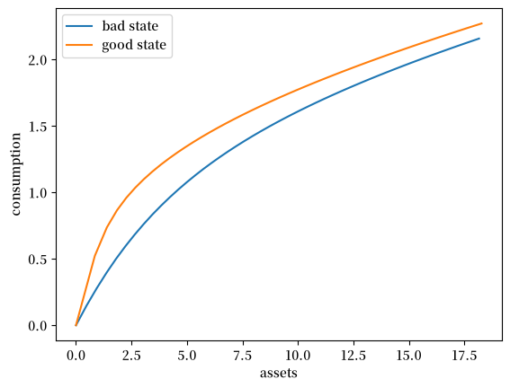
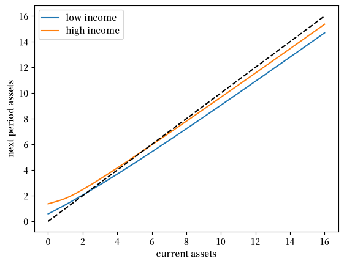
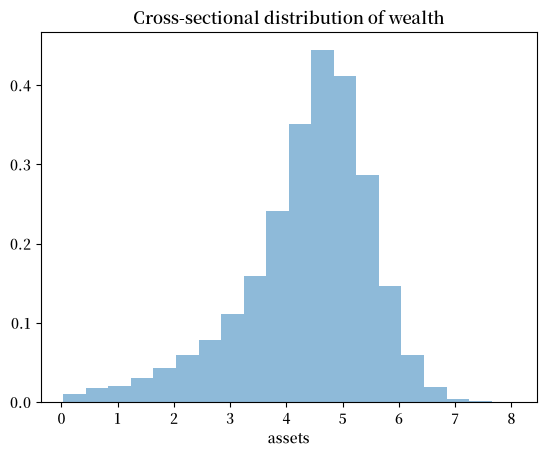
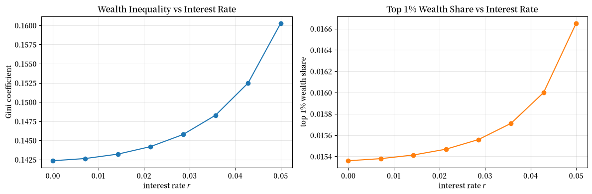
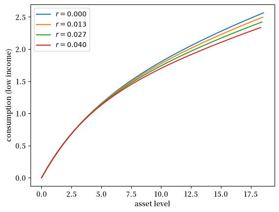
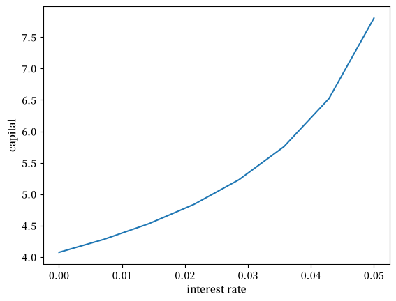

70. 收入波动问题 IV：暂时性收入冲击#
GPU
本讲座是在配有GPU的机器上构建的——不过没有GPU也可以运行。
Google Colab 提供带GPU的免费套餐，使用方法如下：
点击右上角的”播放”图标
选择 Colab
将运行时环境设置为包含GPU
70.1. 概述#
在本讲座中，我们通过向收入过程中添加暂时性冲击，继续扩展 收入波动问题 III：内生网格法 中的收入波动问题（IFP）。
除了 Anaconda 中已有的库之外，本讲座还需要以下库：
!pip install quantecon jax
我们还需要以下导入：
import matplotlib.pyplot as plt
import numpy as np
import numba
from quantecon import MarkovChain
import jax
import jax.numpy as jnp
from typing import NamedTuple
import matplotlib as mpl # i18n
FONTPATH = "fonts/SourceHanSerifSC-SemiBold.otf" # i18n
mpl.font_manager.fontManager.addfont(FONTPATH) # i18n
mpl.rcParams['font.family'] = ['Source Han Serif SC'] # i18n
70.2. 家庭问题#
我们先简要概述模型，然后讨论如何求解它。
寻求对模型和 EGM 求解方法更深入讨论的读者可以查阅 收入波动问题 III：内生网格法。
70.2.1. 设置#
家庭选择一个状态依存的消费计划 \(\{c_t\}_{t \geq 0}\)，以最大化
约束条件为
符号定义和时间安排与 收入波动问题 III：内生网格法 中相同。
现在，非资本收入 \(Y_t\) 由 \(Y_t = y(Z_t, \eta_t)\) 给出，其中
\(\{Z_t\}\) 是一个外生状态过程（持久性成分），
\(\{\eta_t\}\) 是一个独立同分布冲击过程，以及
\(y\) 是一个取值于 \(\mathbb{R}_+\) 的函数。
在本讲座中，我们假设 \(\eta_t \sim N(0, 1)\)。
我们再次将 \(\{Z_t\}\) 取为一个有限状态马尔可夫链，取值于 \(\mathsf Z\)，其马尔可夫矩阵为 \(\Pi\)。
冲击过程 \(\{\eta_t\}\) 独立于 \(\{Z_t\}\)，代表暂时性收入波动。
除了之前的假设之外，我们假设 \(y(z, \eta) = \exp(a_y \eta + z b_y)\)，其中 \(a_y, b_y\) 为正常数。
资产空间和状态空间保持不变，最优路径的定义也保持不变。
泛函欧拉方程的形式为
这里
\((u' \circ \sigma)(s) := u'(\sigma(s))\)，
撇号表示下一期状态（以及导数），
\(\phi\) 是冲击 \(\eta_t\) 的密度（标准正态），以及
\(\sigma\) 是未知函数。
等式 (70.2) 在所有内部选择处成立，即 \(\sigma(a, z) < a\)。
我们的目标是找到 (70.2) 的一个不动点 \(\sigma\)。
为此我们使用 EGM。
下面我们使用关系式 \(a_t = c_t + s_t\) 和 \(a_{t+1} = R s_t + Y_{t+1}\)。
我们从一个外生储蓄网格 \(s_0 < s_1 < \cdots < s_m\) 开始，其中 \(s_0 = 0\)。
我们固定策略函数 \(\sigma\) 的当前猜测值。
对于每个 \(i \geq 1\) 的外生储蓄水平 \(s_i\) 和当前状态 \(z_j\)，我们设定
欧拉方程在此处成立，因为 \(i \geq 1\) 意味着 \(s_i > 0\)，从而消费是内部的。
对于边界情形 \(s_0 = 0\)，我们设定
然后我们通过以下方式获得对应的内生当前资产网格
我们对策略函数的下一个猜测（记为 \(K\sigma\)）是插值点
对每个 \(j\) 的线性插值。
70.3. NumPy 实现#
在本节中，我们将编写一个 NumPy 版本的代码，目标仅在于清晰性，而非效率。
一旦它能够正常工作，我们将编写一个效率高得多的 JAX 版本，并检查是否得到相同的结果。
我们使用 CRRA 效用形式
70.3.1. 设置#
这里我们构建一个名为 IFPNumPy 的类，用于存储模型的基本要素。
外生状态过程 \(\{Z_t\}\) 默认为一个两状态马尔可夫链，转移矩阵为 \(\Pi\)。
class IFPNumPy(NamedTuple):
R: float # 总利率 R = 1 + r
β: float # 贴现因子
γ: float # 偏好参数
Π: np.ndarray # 外生冲击的马尔可夫矩阵
z_grid: np.ndarray # Z_t 的马尔可夫状态值
s: np.ndarray # 外生储蓄网格
a_y: float # Y_t 的尺度参数
b_y: float # Y_t 的加性参数
η_draws: np.ndarray # 用于蒙特卡洛的创新 η 的抽样
def create_ifp(r=0.01,
β=0.96,
γ=1.5,
Π=((0.6, 0.4),
(0.05, 0.95)),
z_grid=(-10.0, np.log(2.0)),
savings_grid_max=16,
savings_grid_size=50,
a_y=0.2,
b_y=0.5,
shock_draw_size=100,
seed=1234):
np.random.seed(seed)
s = np.linspace(0, savings_grid_max, savings_grid_size)
Π, z_grid = np.array(Π), np.array(z_grid)
R = 1 + r
η_draws = np.random.randn(shock_draw_size)
assert R * β < 1, "Stability condition violated."
return IFPNumPy(R, β, γ, Π, z_grid, s, a_y, b_y, η_draws)
70.3.2. 求解器#
这里是算子 \(K\)，它将当前猜测值 \(\sigma\) 转换为下一期猜测值 \(K\sigma\)。
在实践中，它接收
最优消费值 \(c_{ij}\) 的猜测值，存储为
c_vec以及一组对应的内生网格点 \(a^e_{ij}\)，存储为
a_vec
这些通过对每个 \(j\) 在 \(i\) 上对 \((a^e_{ij}, c_{ij})\) 进行线性插值，转换为消费策略 \(a \mapsto \sigma(a, z_j)\)。
当我们计算 (70.3) 中的消费时，我们将对 \(\eta'\) 使用蒙特卡洛方法，从而表达式变为
其中每个 \(\eta_{\ell}\) 都是一个标准正态抽样。
@numba.jit
def K_numpy(
c_in: np.ndarray, # σ 在内生网格上的初始猜测
a_in: np.ndarray, # 初始内生网格
ifp_numpy: IFPNumPy
) -> np.ndarray:
"""
使用内生网格方法（Endogenous Grid Method）的 IFP 模型的欧拉方程算子。
该算子实现 EGM 算法的一次迭代，用于更新消费策略函数。
"""
R, β, γ, Π, z_grid, s, a_y, b_y, η_draws = ifp_numpy
n_a = len(s)
n_z = len(z_grid)
# 效用函数
def u_prime(c):
return c**(-γ)
def u_prime_inv(c):
return c**(-1/γ)
def y(z, η):
return np.exp(a_y * η + z * b_y)
c_out = np.zeros_like(c_in)
for i in range(1, n_a): # 从 1 开始，对应正储蓄水平
for j in range(n_z):
# 计算 Σ_z' ∫ u'(σ(R s_i + y(z', η'), z')) φ(η') dη' Π[z_j, z']
expectation = 0.0
for k in range(n_z):
z_prime = z_grid[k]
# 对 η 抽样进行积分（蒙特卡洛）
inner_sum = 0.0
for η in η_draws:
# 计算下一期资产
next_a = R * s[i] + y(z_prime, η)
# 插值得到 σ(R s_i + y(z', η), z')
next_c = np.interp(next_a, a_in[:, k], c_in[:, k])
# 加入内部求和
inner_sum += u_prime(next_c)
# 对 η 抽样取平均以近似积分
# 当 z' = z_grid[k] 时的 ∫ u'(σ(R s_i + y(z', η'), z')) φ(η') dη'
inner_mean_k = (inner_sum / len(η_draws))
# 用转移概率加权并加入期望
expectation += inner_mean_k * Π[j, k]
# 计算更新后的 c_{ij} 值
c_out[i, j] = u_prime_inv(β * R * expectation)
a_out = c_out + s[:, None]
return c_out, a_out
为了求解该模型，我们使用一个简单的 while 循环。
def solve_model_numpy(
ifp_numpy: IFPNumPy,
c_init: np.ndarray,
a_init: np.ndarray,
tol: float = 1e-5,
max_iter: int = 1_000
) -> np.ndarray:
"""
使用带 EGM 的时间迭代求解模型。
"""
c_in, a_in = c_init, a_init
i = 0
error = tol + 1
while error > tol and i < max_iter:
c_out, a_out = K_numpy(c_in, a_in, ifp_numpy)
error = np.max(np.abs(c_out - c_in))
i = i + 1
c_in, a_in = c_out, a_out
return c_out, a_out
让我们对 EGM 代码进行实测。
ifp_numpy = create_ifp()
R, β, γ, Π, z_grid, s, a_y, b_y, η_draws = ifp_numpy
# 初始条件 —— 家庭消费掉所有资产
a_init = s[:, None] * np.ones(len(z_grid))
c_init = a_init
# 从这些初始条件开始求解
c_vec, a_vec = solve_model_numpy(
ifp_numpy, c_init, a_init
)
这里是每个 \(z\) 状态下最优消费策略的图形
fig, ax = plt.subplots()
ax.plot(a_vec[:, 0], c_vec[:, 0], label='bad state')
ax.plot(a_vec[:, 1], c_vec[:, 1], label='good state')
ax.set(xlabel='assets', ylabel='consumption')
ax.legend()
plt.show()
findfont: Failed to find font weight normal, now using 600.

70.4. JAX 实现#
现在我们编写一个效率更高的 JAX 版本，它可以在 GPU 上运行。
70.4.1. 设置#
我们从一个名为 IFP 的类开始，用于存储模型的基本要素。
class IFP(NamedTuple):
R: float # 总利率 R = 1 + r
β: float # 贴现因子
γ: float # 偏好参数
Π: jnp.ndarray # 外生冲击的马尔可夫矩阵
z_grid: jnp.ndarray # Z_t 的马尔可夫状态值
s: jnp.ndarray # 外生储蓄网格
a_y: float # Y_t 的尺度参数
b_y: float # Y_t 的加性参数
η_draws: jnp.ndarray # 用于蒙特卡洛的创新 η 的抽样
def create_ifp(r=0.01,
β=0.94,
γ=1.5,
Π=((0.6, 0.4),
(0.05, 0.95)),
z_grid=(-10.0, jnp.log(2.0)),
savings_grid_max=16,
savings_grid_size=50,
a_y=0.2,
b_y=0.5,
shock_draw_size=100,
seed=1234):
key = jax.random.PRNGKey(seed)
s = jnp.linspace(0, savings_grid_max, savings_grid_size)
Π, z_grid = jnp.array(Π), jnp.array(z_grid)
R = 1 + r
η_draws = jax.random.normal(key, (shock_draw_size,))
assert R * β < 1, "Stability condition violated."
return IFP(R, β, γ, Π, z_grid, s, a_y, b_y, η_draws)
70.4.2. 求解器#
这里是算子 \(K\)，它将当前猜测值 \(\sigma\) 转换为下一期猜测值 \(K\sigma\)。
def K(
c_in: jnp.ndarray,
a_in: jnp.ndarray,
ifp: IFP
) -> jnp.ndarray:
"""
使用内生网格方法（Endogenous Grid Method）的 IFP 模型的欧拉方程算子。
该算子实现 EGM 算法的一次迭代，用于更新消费策略函数。
"""
R, β, γ, Π, z_grid, s, a_y, b_y, η_draws = ifp
n_a = len(s)
n_z = len(z_grid)
# 效用函数
def u_prime(c):
return c**(-γ)
def u_prime_inv(c):
return c**(-1/γ)
def y(z, η):
return jnp.exp(a_y * η + z * b_y)
def compute_c(i, j):
" 当 i >= 1（内部选择）时计算 c_ij。 "
def expected_mu(k):
" 近似 ∫ u'(σ(R s_i + y(z_k, η'), z_k)) φ(η') dη' "
def compute_mu_at_eta(η):
" 计算 u'(σ(R * s_i + y(z_k, η), z_k)) "
next_a = R * s[i] + y(z_grid[k], η)
# 插值得到 σ(R * s_i + y(z_k, η), z_k)
next_c = jnp.interp(next_a, a_in[:, k], c_in[:, k])
# 返回 u'(σ(R * s_i + y(z_k, η), z_k))
return u_prime(next_c)
# 对 η 抽样取平均以近似内部积分
# ∫ u'(σ(R s_i + y(z_k, η'), z_k)) φ(η') dη'
all_draws = jax.vmap(compute_mu_at_eta)(η_draws)
return jnp.mean(all_draws)
# 计算期望：Σ_k [∫ u'(σ(...)) φ(η) dη] * Π[j, k]
expectations = jax.vmap(expected_mu)(jnp.arange(n_z))
expectation = jnp.sum(expectations * Π[j, :])
# 求逆以得到 (s_i, z_j) 处的消费 c_ij
return u_prime_inv(β * R * expectation)
# 为 vmap 计算所有 c_{ij} 设置索引网格
i_grid = jnp.arange(1, n_a)
j_grid = jnp.arange(n_z)
# 对每个 i 在 j 上使用 vmap
compute_c_i = jax.vmap(compute_c, in_axes=(None, 0))
# 在 i 上使用 vmap
compute_c = jax.vmap(lambda i: compute_c_i(i, j_grid))
# 计算 i >= 1 时的消费
c_out_interior = compute_c(i_grid) # 形状：(n_a-1, n_z)
# 对于 i = 0，将消费设为 0
c_out_boundary = jnp.zeros((1, n_z))
# 拼接边界和内部
c_out = jnp.concatenate([c_out_boundary, c_out_interior], axis=0)
# 计算内生资产网格：a^e_{ij} = c_{ij} + s_i
a_out = c_out + s[:, None]
return c_out, a_out
这里是一个使用该算子求解模型的 jit 加速迭代例程。
@jax.jit
def solve_model(
ifp: IFP,
c_init: jnp.ndarray, # σ 在内生网格上的初始猜测
a_init: jnp.ndarray, # 初始内生网格
tol: float = 1e-5,
max_iter: int = 1000
) -> jnp.ndarray:
"""
使用带 EGM 的时间迭代求解模型。
"""
def condition(loop_state):
c_in, a_in, i, error = loop_state
return (error > tol) & (i < max_iter)
def body(loop_state):
c_in, a_in, i, error = loop_state
c_out, a_out = K(c_in, a_in, ifp)
error = jnp.max(jnp.abs(c_out - c_in))
i += 1
return c_out, a_out, i, error
i, error = 0, tol + 1
initial_state = (c_init, a_init, i, error)
final_loop_state = jax.lax.while_loop(condition, body, initial_state)
c_out, a_out, i, error = final_loop_state
return c_out, a_out
70.4.3. 测试运行#
让我们对 EGM 代码进行实测。
ifp = create_ifp()
R, β, γ, Π, z_grid, s, a_y, b_y, η_draws = ifp
# 设置家庭消费掉所有资产的初始条件
a_init = s[:, None] * jnp.ones(len(z_grid))
c_init = a_init
# 从这些初始条件开始求解
c_vec_jax, a_vec_jax = solve_model(ifp, c_init, a_init)
为了验证我们 JAX 实现的正确性，让我们将其与之前开发的 NumPy 版本进行比较。
# 比较结果
max_c_diff = np.max(np.abs(np.array(c_vec) - c_vec_jax))
max_ae_diff = np.max(np.abs(np.array(a_vec) - a_vec_jax))
print(f"Maximum difference in consumption policy: {max_c_diff:.2e}")
print(f"Maximum difference in asset grid: {max_ae_diff:.2e}")
Maximum difference in consumption policy: 3.94e-01
Maximum difference in asset grid: 3.94e-01
这些数字确认了我们使用两种方法计算的策略本质上是相同的。
（剩余的差异主要是由于在相对较小的样本上不同的蒙特卡洛积分结果所致。）
70.4.4. 计时#
现在让我们比较 NumPy 和 JAX 实现之间的执行时间。
import time
# 为 NumPy 版本设置初始条件
s_np = np.array(s)
z_grid_np = np.array(z_grid)
a_init_np = s_np[:, None] * np.ones(len(z_grid_np))
c_init_np = a_init_np.copy()
# 为 JAX 版本设置初始条件
a_init_jx = s[:, None] * jnp.ones(len(z_grid))
c_init_jx = a_init_jx
# 计时 NumPy 版本
start = time.time()
c_vec_np, a_vec_np = solve_model_numpy(ifp_numpy, c_init_np, a_init_np)
numpy_time = time.time() - start
# 计时 JAX 版本（包含编译）
start = time.time()
c_vec_jx, a_vec_jx = solve_model(ifp, c_init_jx, a_init_jx)
c_vec_jx.block_until_ready()
jax_time_with_compile = time.time() - start
# 计时 JAX 版本（不含编译 —— 第二次运行）
start = time.time()
c_vec_jx, a_vec_jx = solve_model(ifp, c_init_jx, a_init_jx)
c_vec_jx.block_until_ready()
jax_time = time.time() - start
print(f"NumPy time: {numpy_time:.4f} seconds")
print(f"JAX time (with compile): {jax_time_with_compile:.4f} seconds")
print(f"JAX time (without compile): {jax_time:.4f} seconds")
print(f"Speedup (NumPy/JAX): {numpy_time/jax_time:.2f}x")
NumPy time: 0.2275 seconds
JAX time (with compile): 0.0122 seconds
JAX time (without compile): 0.0118 seconds
Speedup (NumPy/JAX): 19.30x
由于 JIT 编译和 GPU/TPU 加速（如果可用），JAX 实现明显更快。
这里是每个 \(z\) 状态下最优策略的图形
fig, ax = plt.subplots()
ax.plot(a_vec[:, 0], c_vec[:, 0], label='bad state')
ax.plot(a_vec[:, 1], c_vec[:, 1], label='good state')
ax.set(xlabel='assets', ylabel='consumption')
ax.legend()
plt.show()
70.4.5. 动态#
为了初步理解在默认参数下家庭持有的长期资产水平，让我们观察 45 度图，它展示了在最优消费策略下资产的运动规律。
fig, ax = plt.subplots()
def y(z, η):
return jnp.exp(a_y * η + z * b_y)
def y_bar(k):
"""
取 z = z_grid[k]，计算以下的近似值
E_z Y' = Σ_{z'} ∫ y(z', η') φ(η') dη' Π[z, z']
这是给定 Z_t = z 时 Y_{t+1} 的期望。
"""
# 在给定的 z' 处近似 ∫ y(z', η') φ(η') dη'
def mean_y_at_z(z_prime):
return jnp.mean(y(z_prime, η_draws))
# 对所有 z' 计算此积分
y_means = jax.vmap(mean_y_at_z)(z_grid)
# 用转移概率加权并求和
return jnp.sum(y_means * Π[k, :])
for k, label in zip((0, 1), ('low income', 'high income')):
# 在储蓄网格上对消费策略进行插值
c_on_grid = jnp.interp(s, a_vec[:, k], c_vec[:, k])
ax.plot(s, R * (s - c_on_grid) + y_bar(k) , label=label)
ax.plot(s, s, 'k--')
ax.set(xlabel='current assets', ylabel='next period assets')
ax.legend()
plt.show()

实线表示每个 \(z\) 下资产的更新函数，即
其中
是给定当前状态 \(z\) 时预期劳动收入的蒙特卡洛近似。
虚线是 45 度线。
该图表明，平均而言，动态将是稳定的 —— 即使在最高状态下资产也不会发散。
事实证明这确实成立：存在唯一的资产平稳分布。
详情请参见 [Ma et al., 2020]
这个平稳分布代表了当家庭面临特异性冲击时，家庭间资产的长期分散情况。
70.5. 模拟#
让我们回到默认模型，研究资产的平稳分布。
我们的计划是让大量家庭向前推进 \(T\) 期，然后对资产的横截面分布绘制直方图。
设置 num_households=50_000, T=500。
首先我们编写一个函数，将单个家庭向前推进一段时间，并记录资产的最终值。
该函数接收一对解 c_vec 和 a_vec，将它们理解为代表与给定模型 ifp 相关联的最优策略
@jax.jit
def simulate_household(
key, a_0, z_idx_0, c_vec, a_vec, ifp, T
):
"""
模拟单个家庭 T 期，以近似资产的平稳分布。
- key 是随机数生成器的状态
- ifp 是 IFP 的一个实例
- c_vec, a_vec 是 ifp 的最优消费策略、内生网格
"""
R, β, γ, Π, z_grid, s, a_y, b_y, η_draws = ifp
n_z = len(z_grid)
def y(z, η):
return jnp.exp(a_y * η + z * b_y)
# 为消费策略创建插值函数
σ = lambda a, z_idx: jnp.interp(a, a_vec[:, z_idx], c_vec[:, z_idx])
# 向前模拟 T 期
def update(t, state):
a, z_idx = state
# 从 Π[z, z'] 抽取下一个冲击 z'
current_key = jax.random.fold_in(key, 2*t)
z_next_idx = jax.random.choice(current_key, n_z, p=Π[z_idx]).astype(jnp.int32)
z_next = z_grid[z_next_idx]
# 抽取 η 冲击
η_key = jax.random.fold_in(key, 2*t + 1)
η = jax.random.normal(η_key)
# 更新资产：a' = R * (a - c) + Y'
a_next = R * (a - σ(a, z_idx)) + y(z_next, η)
# 返回更新后的状态
return a_next, z_next_idx
initial_state = a_0, z_idx_0
final_state = jax.lax.fori_loop(0, T, update, initial_state)
a_final, _ = final_state
return a_final
现在我们编写一个函数来并行模拟许多家庭。
def compute_asset_stationary(
c_vec, a_vec, ifp, num_households=50_000, T=500, seed=1234
):
"""
模拟 num_households 个家庭 T 期，以近似资产的平稳分布。
返回资产持有的最终横截面。
- ifp 是 IFP 的一个实例
- c_vec, a_vec 是最优消费策略和内生网格。
"""
R, β, γ, Π, z_grid, s, a_y, b_y, η_draws = ifp
n_z = len(z_grid)
# 为消费策略创建插值函数
# 在内生网格上进行插值
σ = lambda a, z_idx: jnp.interp(a, a_vec[:, z_idx], c_vec[:, z_idx])
# 从 assets = savings_grid_max / 2 开始
a_0_vector = jnp.full(num_households, s[-1] / 2)
# 初始化每个家庭的外生状态
z_idx_0_vector = jnp.zeros(num_households).astype(jnp.int32)
# 对许多家庭进行向量化
key = jax.random.PRNGKey(seed)
keys = jax.random.split(key, num_households)
# 在 (key, a_0, z_idx_0) 上对 simulate_household 进行向量化
sim_all_households = jax.vmap(
simulate_household, in_axes=(0, 0, 0, None, None, None, None)
)
assets = sim_all_households(keys, a_0_vector, z_idx_0_vector, c_vec, a_vec, ifp, T)
return np.array(assets)
现在我们调用该函数，生成资产分布并绘制其直方图：
ifp = create_ifp()
R, β, γ, Π, z_grid, s, a_y, b_y, η_draws = ifp
a_init = s[:, None] * jnp.ones(len(z_grid))
c_init = a_init
c_vec, a_vec = solve_model(ifp, c_init, a_init)
assets = compute_asset_stationary(c_vec, a_vec, ifp)
fig, ax = plt.subplots()
ax.hist(assets, bins=20, alpha=0.5, density=True)
ax.set(xlabel='assets', title="Cross-sectional distribution of wealth")
plt.show()
findfont: Failed to find font weight normal, now using 600.

正如 收入波动问题 III：内生网格法 中的情况一样，财富分布看起来不太合理。
虽然我们至少获得了一个不平凡的右尾，但我们仍然存在左偏。
70.6. 财富不平等#
让我们通过计算一些标准的衡量指标来观察财富不平等。
我们还将研究不平等如何随利率变化。
70.6.1. 衡量不平等#
我们将计算两个常见的财富不平等衡量指标：
基尼系数：一种不平等的度量，范围从 0（完全平等）到 1（完全不平等）
前 1% 财富份额：最富有的 1% 家庭持有的总财富的比例
这里是计算这些指标的函数：
def gini_coefficient(x):
"""
计算数组 x 的基尼系数。
"""
x = jnp.asarray(x)
n = len(x)
x_sorted = jnp.sort(x)
# 计算基尼系数
cumsum = jnp.cumsum(x_sorted)
a = (2 * jnp.sum((jnp.arange(1, n+1)) * x_sorted)) / (n * cumsum[-1])
return a - (n + 1) / n
def top_share(
x: jnp.array, # 财富值数组
p: float=0.01 # 顶部家庭的比例（前 1% 默认为 0.01）
):
"""
计算顶部 p 比例家庭持有的总财富份额。
"""
x = jnp.asarray(x)
x_sorted = jnp.sort(x)
# 前 p% 家庭的数量
n_top = int(jnp.ceil(len(x) * p))
# 前 p% 持有的财富
wealth_top = jnp.sum(x_sorted[-n_top:])
# 总财富
wealth_total = jnp.sum(x_sorted)
return wealth_top / wealth_total
让我们为基准模拟计算这些指标：
gini = gini_coefficient(assets)
top1 = top_share(assets, p=0.01)
print(f"Gini coefficient: {gini:.4f}")
print(f"Top 1% wealth share: {top1:.4f}")
Gini coefficient: 0.1428
Top 1% wealth share: 0.0154
这些数字相差甚远，至少对于像美国这样的国家而言！
近期数据表明
美国的财富基尼系数约为 0.8
前 1% 的财富份额超过 0.3
当然，我们并未花费太多精力去准确估计或校准我们的参数。
但实际上原因更深层 —— 具有这种结构的模型将始终难以复现观测到的财富分布。
在后面的讲座 中，我们将看看是否能改进这些数字。
70.6.2. 利率与不平等#
让我们研究财富不平等如何随利率 \(r\) 变化。
我们推测更高的利率将增加财富不平等，因为更富有的家庭从其资产回报中获益更多。
让我们进行实证研究：
# 对 8 个利率值进行测试
M = 8
r_vals = np.linspace(0, 0.05, M)
gini_vals = []
top1_vals = []
# 对每个 r 求解并模拟
for r in r_vals:
print(f'Analyzing inequality at r = {r:.4f}')
ifp = create_ifp(r=r)
R, β, γ, Π, z_grid, s, a_y, b_y, η_draws = ifp
a_init = s[:, None] * jnp.ones(len(z_grid))
c_init = a_init
c_vec, a_vec = solve_model(ifp, c_init, a_init)
assets = compute_asset_stationary(
c_vec, a_vec, ifp, num_households=50_000, T=500
)
gini = gini_coefficient(assets)
top1 = top_share(assets, p=0.01)
gini_vals.append(gini)
top1_vals.append(top1)
# 使用上次的解作为策略求解器的初始条件
c_init = c_vec
a_init = a_vec
Analyzing inequality at r = 0.0000
Analyzing inequality at r = 0.0071
Analyzing inequality at r = 0.0143
Analyzing inequality at r = 0.0214
Analyzing inequality at r = 0.0286
Analyzing inequality at r = 0.0357
Analyzing inequality at r = 0.0429
Analyzing inequality at r = 0.0500
现在让我们可视化结果：
fig, axes = plt.subplots(1, 2, figsize=(12, 4))
# 绘制基尼系数与利率的关系
axes[0].plot(r_vals, gini_vals, 'o-')
axes[0].set_xlabel('interest rate $r$')
axes[0].set_ylabel('Gini coefficient')
axes[0].set_title('Wealth Inequality vs Interest Rate')
axes[0].grid(alpha=0.3)
# 绘制前 1% 份额与利率的关系
axes[1].plot(r_vals, top1_vals, 'o-', color='C1')
axes[1].set_xlabel('interest rate $r$')
axes[1].set_ylabel('top 1% wealth share')
axes[1].set_title('Top 1% Wealth Share vs Interest Rate')
axes[1].grid(alpha=0.3)
plt.tight_layout()
plt.show()
findfont: Failed to find font weight normal, now using 600.

结果表明，这两个不平等衡量指标都随利率增加而增加。
然而差异很小，而且我们无法在不违反稳定性约束的情况下将 \(r\) 提高太多。
当然，改变利率无法产生我们在数据中看到的那种数字。
70.7. 练习#
练习 70.1
让我们考虑利率如何影响消费。
让
r遍历np.linspace(0, 0.016, 4)。除
r之外，将所有参数保持在其默认值。将收入冲击固定在最小值，绘制消费与资产的关系。
你的图形应该表明，对于这个模型，更高的利率会抑制消费（因为它们鼓励更多储蓄）。
解答 练习 70.1
这里是一个解法：
# 当 β=0.96 时，我们需要 R*β < 1，因此 r < 0.0416
r_vals = np.linspace(0, 0.04, 4)
fig, ax = plt.subplots()
for r_val in r_vals:
ifp = create_ifp(r=r_val)
R, β, γ, Π, z_grid, s, a_y, b_y, η_draws = ifp
a_init = s[:, None] * jnp.ones(len(z_grid))
c_init = a_init
c_vec, a_vec = solve_model(ifp, c_init, a_init)
# 绘制策略
ax.plot(a_vec[:, 0], c_vec[:, 0], label=f'$r = {r_val:.3f}$')
# 用上次的解开始下一轮
c_init = c_vec
a_init = a_vec
ax.set(xlabel='asset level', ylabel='consumption (low income)')
ax.legend()
plt.show()

练习 70.2
接着练习 1，让我们看看储蓄和总资产持有量如何随利率变化
备注
[Ljungqvist and Sargent, 2018] 第 18.6 节可作为本练习所讨论主题的更多背景资料参考。
对于模型的给定参数化，资产平稳分布的均值可以解释为一个经济体中的总资本，该经济体拥有单位质量的事前相同的、面临特异性冲击的家庭。
你的任务是研究这个总资本衡量指标如何随利率变化。
直觉表明，更高的利率应该鼓励资本形成 —— 请验证这一点。
对于利率网格，使用
M = 8
r_vals = np.linspace(0, 0.05, M)
解答 练习 70.2
这里是一个解法
fig, ax = plt.subplots()
asset_mean = []
for r in r_vals:
print(f'Solving model at r = {r}')
ifp = create_ifp(r=r)
R, β, γ, Π, z_grid, s, a_y, b_y, η_draws = ifp
a_init = s[:, None] * jnp.ones(len(z_grid))
c_init = a_init
c_vec, a_vec = solve_model(ifp, c_init, a_init)
assets = compute_asset_stationary(
c_vec, a_vec, ifp, num_households=10_000, T=500
)
mean = np.mean(assets)
asset_mean.append(mean)
print(f' Mean assets: {mean:.4f}')
# 用上次的解开始下一轮
c_init = c_vec
a_init = a_vec
ax.plot(r_vals, asset_mean)
ax.set(xlabel='interest rate', ylabel='capital')
plt.show()
Solving model at r = 0.0
Mean assets: 4.0748
Solving model at r = 0.0071428571428571435
Mean assets: 4.2822
Solving model at r = 0.014285714285714287
Mean assets: 4.5313
Solving model at r = 0.02142857142857143
Mean assets: 4.8383
Solving model at r = 0.028571428571428574
Mean assets: 5.2304
Solving model at r = 0.03571428571428572
Mean assets: 5.7570
Solving model at r = 0.04285714285714286
Mean assets: 6.5214
Solving model at r = 0.05
Mean assets: 7.8005

正如预期的那样，总储蓄随利率增加而增加。